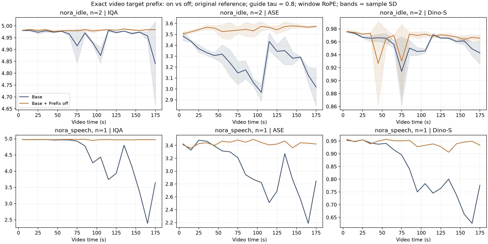
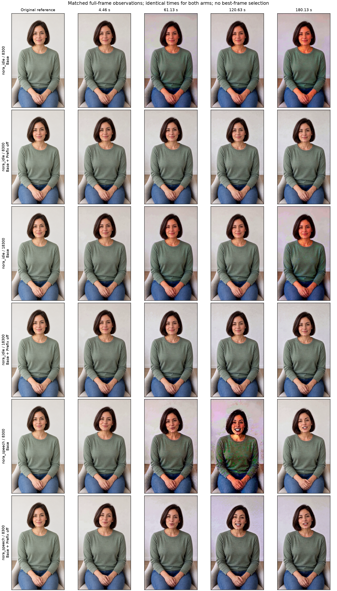

Archived original experiment · 14–15 October 2026. Restored 28 October from retained files; no new model run. Original report language and numerical results preserved. Videos are unchanged. This archive includes the 25 eligible complete screening trajectories and 6 timestep-KV comparison videos; per-segment controls are omitted.
Archive manifest.
原始 Baseline vs Prefix off
同场景、同种子，单独比较固定视频前缀的开关：静坐两个种子、说话一个种子，共 6 条约三分钟视频。复用前 1636 段内所有完整配对的原始输出和评分。
左侧：原始 Baseline，固定视频前缀开启。右侧：Base + Prefix off，关闭固定视频前缀。两侧均保留历史音视频条件，历史 τ=0.8，使用原始参考图和 window RoPE。
这个对照改变了什么
Baseline 在去噪时把目标视频开头的重叠 latent 固定为上一段历史；Prefix off 取消这项强制固定，让模型重新生成该部分。用于衔接的历史音视频仍作为条件输入，输出沿用相同的重叠裁剪规则。
两路共用开场、每段提示词、随机种子和输入参考；原始参考图、历史噪声设置和 RoPE 均一致。已核对 378 个续段请求，实验控制参数仅 target_prefix 从 video 改为 off。此处两路均未启用 AAS。
按场景查看实测结果
每条视频先求均值，再在同场景内汇总；± 表示种子之间的样本标准差。说话仅一个种子，尚不能确认重复性。
三个配对的 ASE 和 Dino-S 均高于 Baseline；静坐两组的 T.Flicker 略低。画质与时间连续性需要分开看，接缝和动作请结合完整视频确认。说话仅一个种子，结果尚不能推广到其他场景。
这是提前停止后对既有实验的专项分析。IQA 接近上限时区分能力有限；Dino-S 受姿态和背景影响；T.Flicker 只比较静坐。没有盲评 MOS。
画质随时间的变化
上面的场景／种子选择同时控制曲线。蓝色为 Base，橙色为 Prefix off。
分场景均值与标准差图

固定时间点的画面对照

依次为原始参考图和预定片段中间帧；静帧用于定位问题，完整动作与接缝仍需看视频。